Verslag
Titel: 2de Zit
Dit verslag werd opgesteld door: Lorek Jeremi
- Naam: Lorek Jeremi
- Studentennummer: 20231362
- Email adres: Jeremi.Lorek@student.uantwerpen.be
Aantal man-uren besteed: 15 uur
Moeilijkheidsgraad: 6 /10 (1 is heel makkelijk, 10 is heel moeilijk)
Inhoud van de oplossing
De oplossing bestaat uit de volgende bestanden (geef alle bestanden op):
- Full Datapath: Foto van het eindresultaat, het volledige datapath
- Decoder: Foto van de decoder
- Controller: Foto van de Controller
- Program Counter: Foto van de program counter
- Ripple Carry Adder: Foto van de Ripple Carry Adder
- 12 bit Adder Carry Lookahead: Foto van de 12 bit adder carry lookahead
- 16-bit ALU: Foto van de 16-bit ALU
- Zero: Foto van de Zero operatie
- NOT: Foto van de NOT operatie
- AND: Foto van de AND operatie
- OR: Foto van de OR operatie
- ADD: Foto van de ADD operatie
- SUB: Foto van de SUB operatie
- Less Than (LT): Foto van de Less Than operatie
- Greater Than (GT): Foto van de Greater Than operatie
- Equal (EQ): Foto van de Equal operatie
- Not Equal (NEQ): Foto van de Not Equal operatie
- Invert (INV): Foto van de Invert operatie
- Shift Left Logical (SLL): Foto van de Shift Left Logical operatie
- Shift Right Logical (SRL): Foto van de Shift Right Logical operatie
- Shift Left Arithmetic (SLA): Foto van de Shift Left Arithmetic operatie
- Shift Right Arithmetic (SRA): Foto van de Shift Right Arithmetic operatie
- No Operation (NOOP): Foto van de No Operation operatie
- 16-bit Register: Foto van het 16-bit register
- Register File: Foto van de Register File
- Main Datapath: Foto van het volledige datapath
- ALU.circ: Logisim (.circ) file van dit project
- Adders.circ: Logisim (.circ) file van dit project
- Memory.circ: Logisim (.circ) file van dit project
- Full Datapath.circ: Logisim (.circ) file van dit project


Verslag 2de zit
Voor dit project moest ik de projecten van het eerste semester uitbreiden van 12 bit naar 16 bit.
Adders
Het eerste project waar ik aan begonnen ben, was het project van de adders. Ik heb de adders uitgebreid van 12 bit naar 16 bit. Eerst heb ik de ripple carry adder uitgebreid door meer 1 bit adders toe te voegen en die te verbinden met elkaar en natuurlijk de input en output 16 bit gemaakt.

Deze foto toont de Ripple carry adder van het project.
Daarna heb ik de 12 bit adder carry lookahead uitgebreid door het niet te laten werken met 3 4-bit adders maar met 4 4-bit adders. Natuurlijk heb ik ook nog de input en output uitgebreid tot 16 bits.

Deze foto toont de 12 bit adder carry lookahead van het project.
ALU
Na de adders heb ik de ALU uitgebreid. Hierbij zijn alle instructies hetzelfde gebleven als ervoor en heb ik ze gewoon uitgebreid van 12 bit naar 16 bit.

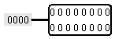
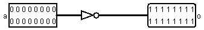
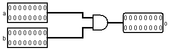
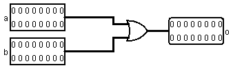
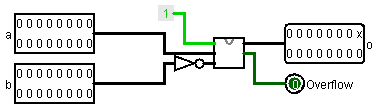
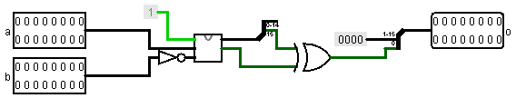
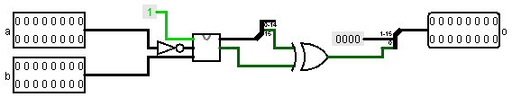
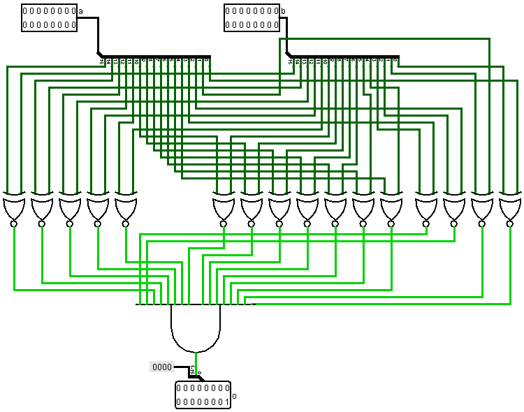
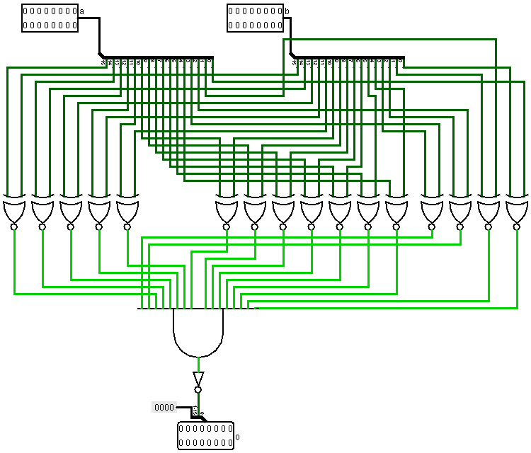
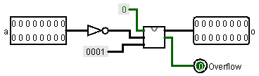
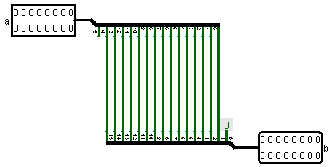
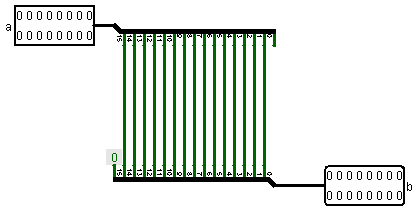
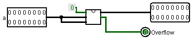
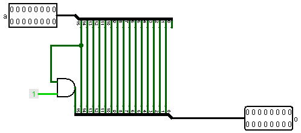
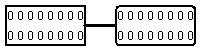
Deze foto's tonen de ALU zelf en alle operaties
Memory
In het project memory heb ik eerst het 12-bit register uitgebreid tot 16 bit. Ik heb de inputs en outputs uitgebreid tot 16 bit en de 12 D flip-flops uitgebreid naar 16 D flip-flops.

Vervolgens heb ik de input en output van het register file uitgebreid naar 16 bit.

Datapath
Uiteindelijk heb ik in het gedeelte van het datapath enkel de program counter uitgebreid van 12 bit naar 16 bit.

Uiteindelijk is dit het datapath dat er hetzelfde uitziet als het datapath gemaakt in het eerste semester.
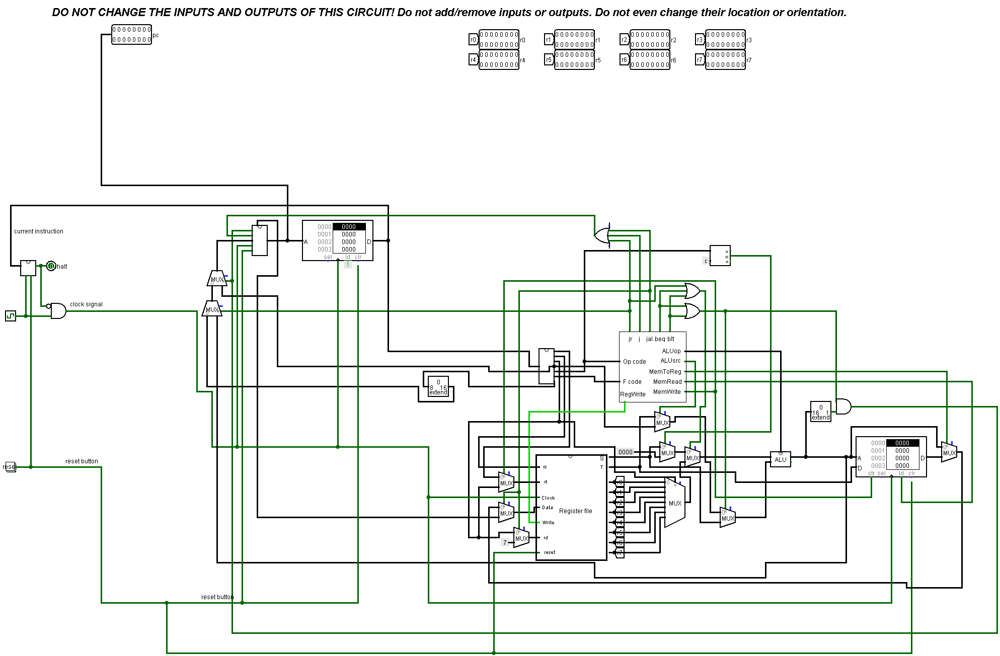
Deze foto toont het volledige datapad van het project. Dit is het uitgewerkte geheel dat de operaties uitwerkt.